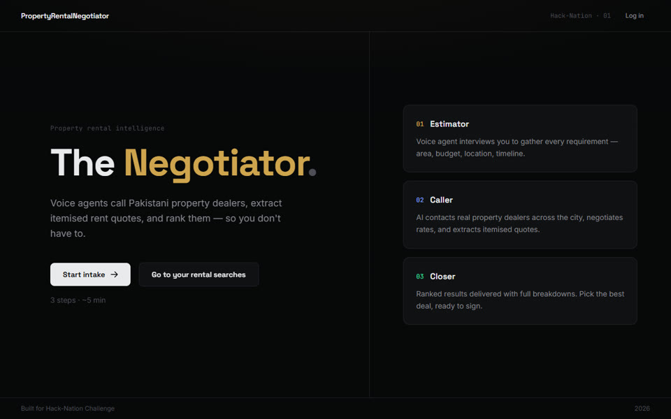
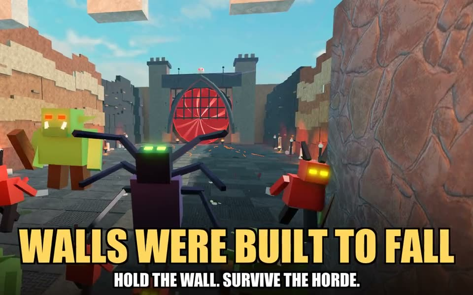
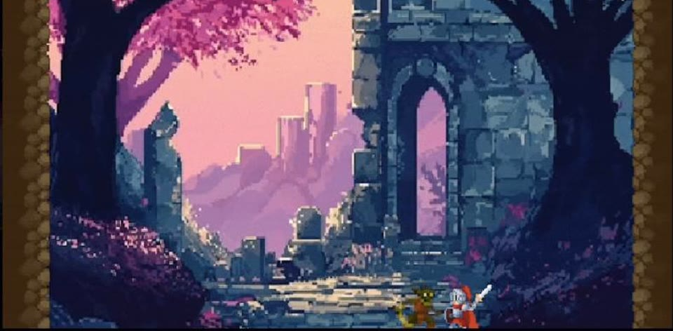
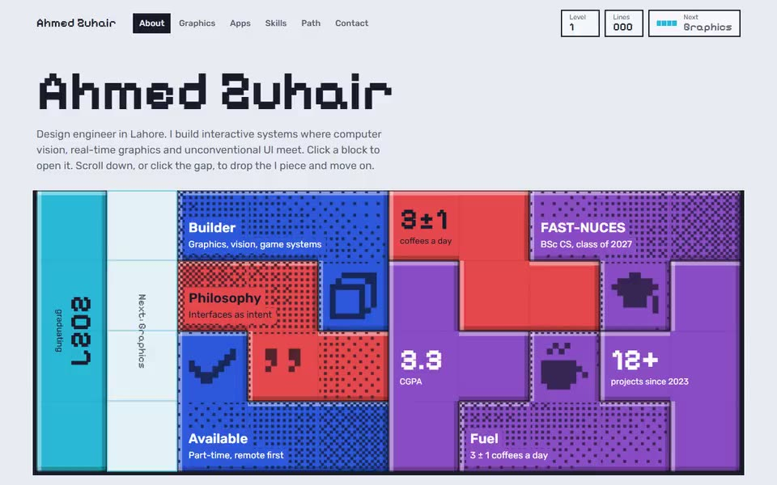
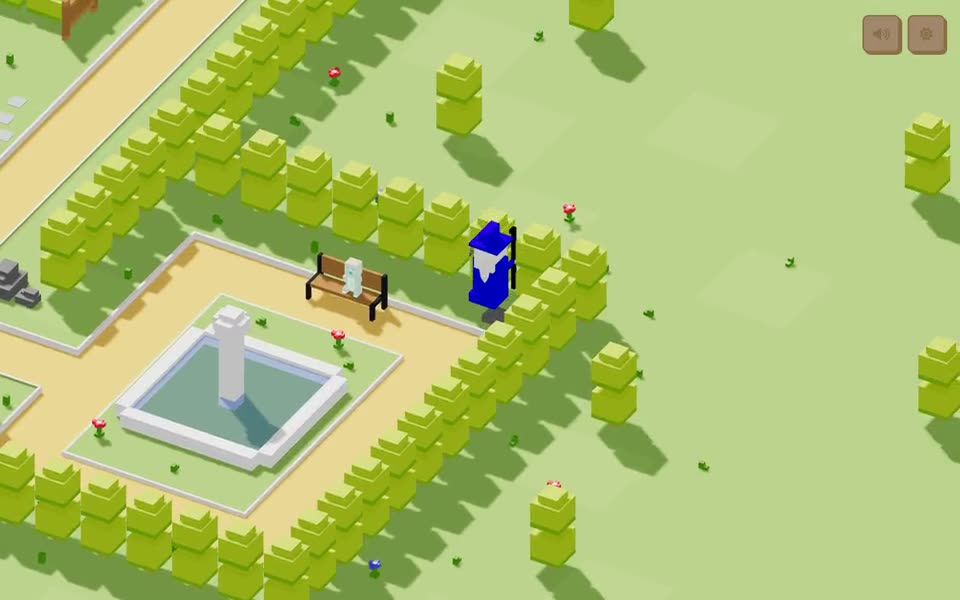

I build things people can move around in: a co-op Roblox game, a storm you sail through, a portfolio that plays Tetris. My final-year project takes that into 3D vision. Each project below plays a clip of it running.
Selected work
-

The Negotiator 2026
Hack-Nation AI hackathon
Voice agents phone property dealers in Pakistan, negotiate rent in live calls and rank the quotes. Every figure in the final report cites its line in the call transcript, such as [Call 3, Line 41].
-
Feed-forward Gaussian Splatting 2026 to 2027
Final-year project, in progress
A benchmark of three feed-forward 3D reconstruction models, MVSplat, NoPoSplat and AnySplat, run on the same scenes and GPUs so quality and cost are measured together. It then tests pruning, compression and keyframe selection.
-

Walls Were Built to Fall 2026
Co-op horde-defense roguelite FPS on Roblox
Players hold a castle wall with towers, traps and 130 spell cards that evolve, mutate and combo, and carry progress between runs. Every model is built procedurally from Roblox primitives.
-

Riposte 2025
2D action game in Unity
Parry combat built from scratch: custom hitbox detection, frame-perfect deflect windows and enemy waves that grow the longer you survive.
Interactive web
-

Tetris portfolio 2026
One HTML file, no libraries
Every page is a Tetris board. A backtracking solver tiles the content into tetrominoes, and scrolling drops an I piece into the gap to clear the line to the next page.
-
Lighthouse 2026
Three.js scene you sail around
A low-poly lighthouse in a storm where each project is a ship. The sea is a vertex shader, and the ships sample the same wave function in JavaScript so they ride it. Every mesh is generated in code and the storm audio is synthesized.
-

Voxl v1 2025
3D portfolio you walk through
A voxel park you explore with the arrow keys, with custom GLSL shaders and a sandbox that extrudes pixel drawings into 3D geometry.
Experience and awards
- Jan 2026 to nowHead of AI Competition, SOFTEC 2026, FAST-NUCES
Run the campus AI coding competition: problems, judging criteria and contestant logistics.
- Jun 2026Freelance developer, SCNT Studio
Built a paid WooCommerce storefront for a perfume brand, end to end in one month.
- Nov 2024Runner-up, FAST speed-programming contest
Placed 2nd of 100+ on data structures, graphs and dynamic programming.
- Jul to Aug 2024Software engineering intern, Mediod Consulting
Customised Odoo ERP modules in Python to automate client workflows.
- 2023 to 2027BSc Computer Science, FAST-NUCES Lahore
CGPA 3.3. Dean's List in the 1st and 6th semesters.
Also built
- ClinicalHubClinic app: appointments, chat, prescriptions, push reminders. Expo and Firebase, 2026.Source
- FabricOS3D fabric customiser in the browser, 2025.LiveSource
- DaylightAI daily dashboard for mood, tasks and money. Next.js, 2025.LiveSource
- Shorts PipelineWrites, narrates, captions, renders and uploads YouTube Shorts. Python and ffmpeg, 2026.Private
- SCNT StudioWooCommerce perfume store, client work, 2026.Launching soon
Tools
- Languages
- C++, C#, TypeScript, Python, Luau, SQL
- Graphics and vision
- Three.js, WebGL, GLSL, Unity, Roblox, OpenCV
- Shipping
- Git, Next.js, Expo, Firebase, WooCommerce, ffmpeg
Contact
Email is fastest: irfy2k1@outlook.com. I'm in Lahore on UTC+5 and usually reply within a day. Older projects live on github.com/irfy2k321.